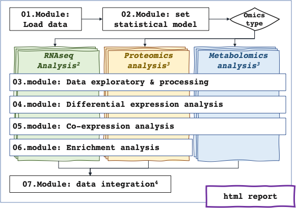

The acquisition of multi-omics data in the context of complex experimental design is a widely used practice to identify features (transcripts, proteins, metabolites,…) and decipher the biological processes they are involved in. The investigation of each omics layer is a good first step to explore and extract relevant biological variability. The statistical integration could then be restrained to pertinent omics levels and features. Such analysis of heterogeneous data remains a technical challenge with the needs of expertise methods and parameters to take into account data specificity. Furthermore, applying different statistical methods from several tools is also a technical challenge in term of data management. In this context, we developed RFLOMICS.
RFLOMICS is an R package and Shiny interface that offers guided, comprehensive, and reproducible analysis within a framework designed to manage multiple omics datasets. The interface provides remarkable flexibility, enabling users to seamlessly navigate between result exploration and visualization.

Specifications:
Constraints:
Repositories:
You can access the rflomics app on Sk8 using this url:
https://rflomics.sk8.inrae.fr/
WARNING: only 2Gb of ram available per app, we recommand using the SK8 solution only if your data have a small number of samples and features.
Download the archive from forgeMIA (tar.gz) or from the github mirror (zip)
You can then install the package from the archive using either the install utility from Rstudio or running the following command:
install.packages("rflomics-master.tar.gz", repos = NULL, type = "source")In a R console, use the following command to install from either the forgeMIA repository or the github repository:
remotes::install_gitlab(repo = "flomics/rflomics", host = "https://forgemia.inra.fr/")
remotes::install_github("https://github.com/ijpb-bioinformatics/RFLOMICS")You can clone the repository from forgeMIA using the following command in a shell terminal:
git clone https://forgemia.inra.fr/flomics/rflomics.gitIn a R console, set the working directory to the git repository, then install the package:
setwd("rflomics/")
remotes::install_local(upgrade="never")Rflomics uses the R package MOFA2. This package depends on a python script and this can lead to several issues. The first step is to consult the MOFA2 troubleshooting FAQ on their website.
If none of the proposed solutions are resolving your issues, you can try some additional steps and verifications.
You can check you have python installed by running which python in a shell terminal. On windows, replace with where python. You should be able to see the path(s) were Python binaries are installed. You can have multiple python version installed at once. You have to make sure the one used by R is this correct one.
pip install mofapy2.echo "Sys.setenv(RETICULATE_PYTHON = \"path_to_python_bin\")" >> .RprofileBiocManager::install("MOFA2") in R.You can check your configuration using reticulate::py_config() in R. Your Python binary path and mofapy2 path should appear after step 5. If it’s not the case, something went wrong.